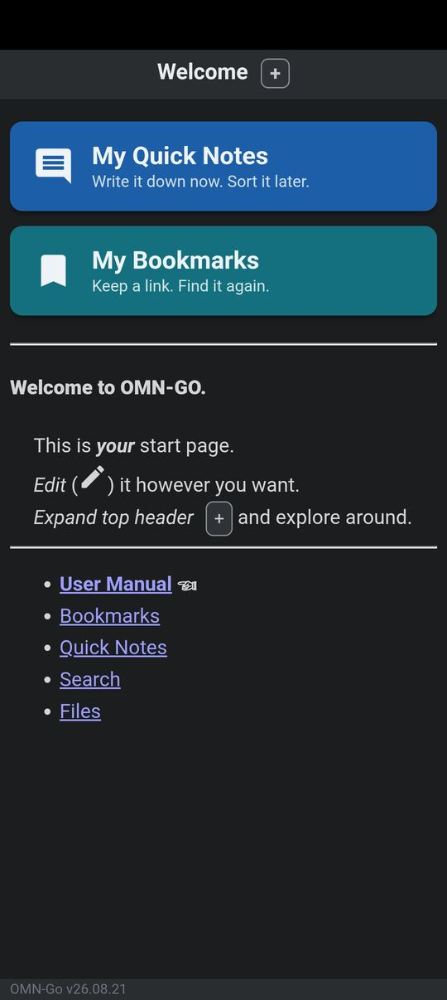
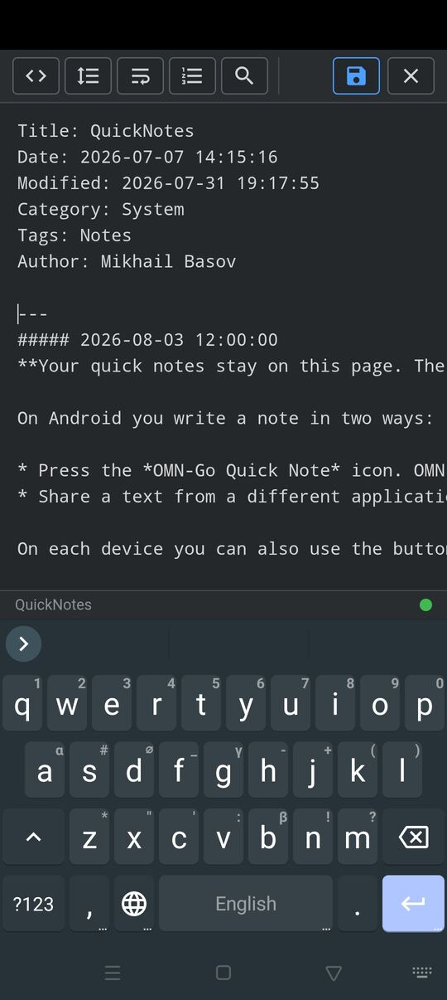
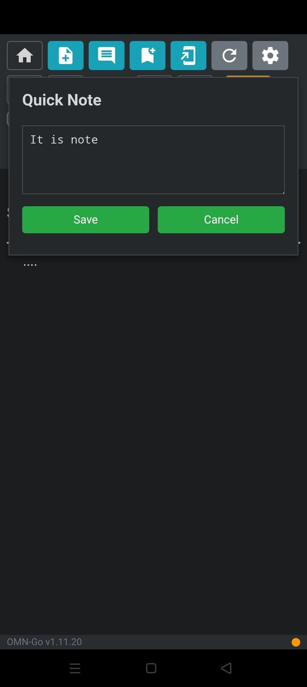
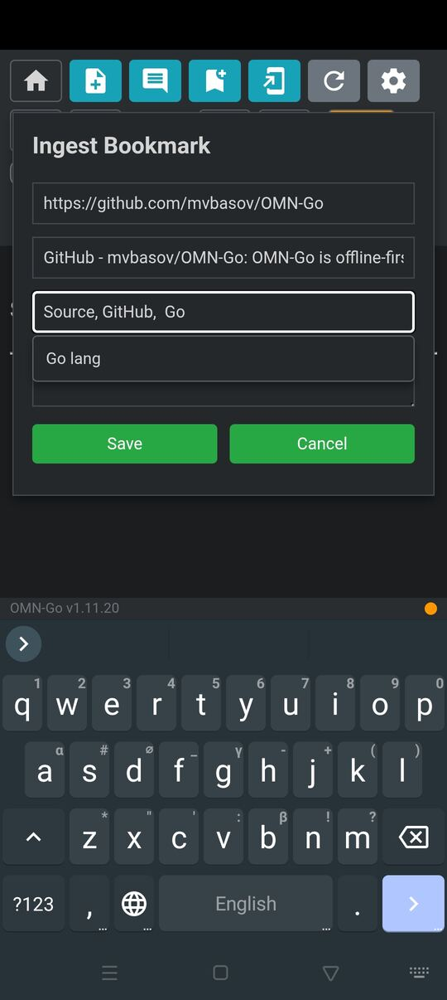
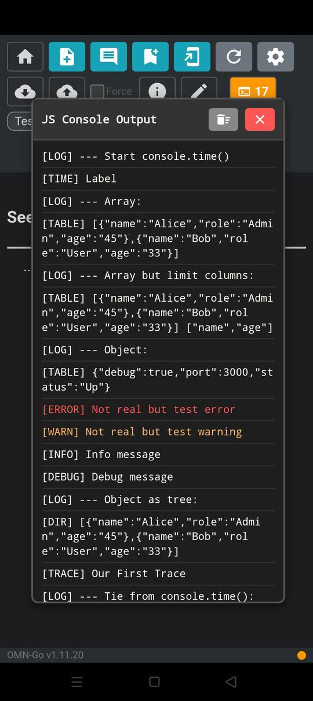
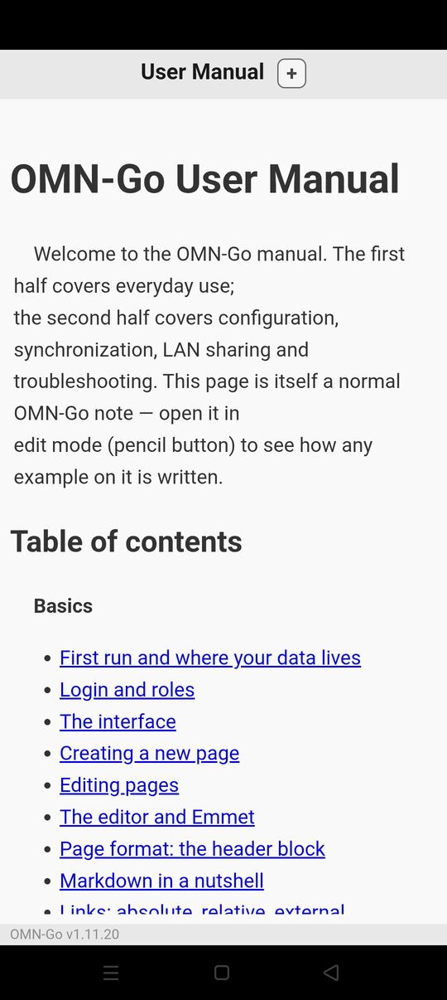

OMN-Go
Open Markdown Notes
Your notes are plain Markdown files on your own device. OMN-Go shows them as web pages on Android and on the desktop. No account. No cloud. It works without an internet connection.
OMN-Go is not on Google Play, and it will not be. Google's policies do not allow some optional features, such as the background web service. These features stay.

A quick look
Write it down now. Sort it later. Keep a link. Find it again.





What it does
OMN-Go is one small Go program. It runs a local web server and shows your notes in a browser view. Everything it needs to render a note is inside the program.
Plain Markdown files
Each note is a .md file with a small header block: title, date, tags. You own the files. Any tool can read them.
Offline first
KaTeX for math and highlight.js for code are in the binary. Day-to-day work needs no internet connection.
Your editor, or ours
Use Sublime Text, VS Code, Kate or any other editor. A small built-in editor is there as a fallback. Paste or drop an image to attach it.
Quick capture
A Quick Notes page and a Bookmarks collector, one press from the start page and from the Android launcher.
Android "Share to"
Share a URL, text, image, JSON file, contact (vCard) or calendar (iCalendar) from another app into your notes.
Optional git sync
Synchronize the whole storage directory between devices over SSH. Conflicts are clear: merge by hand, or do a safe force pull or push.
Optional LAN sharing
Off by default. When you enable it, other devices on your network can read your notes. Each write needs the admin password.
Embedded SQL database
A <script> block in a note can read and write a real SQL database. Make a backup at any time and let git carry it.
Automatic Tags page
OMN-Go reads the Tags: line of each note and builds an index of all your notes by tag.
Math and code
KaTeX formulas, opt-in for each page, and automatic syntax highlighting for fenced code blocks.
Intents and Termux
Opt-in: a link in a note can open a settings screen, start another app or run a Termux command.
Light and dark
A light theme, a dark theme, and a theme that follows the system. You select it on each device.
Where it runs
The same notes and the same interface on each device. Git sync keeps a phone and a desktop in step.
Android
- Android 6.0 (API 23) and newer.
- Needs an Android System WebView of Chromium 85 or newer. On an old device, update the WebView and Chrome first.
- Notes are in
Android/media/net.basov.omngo/(F-Droid build:net.basov.omngo.fdroid). No storage permission is necessary, and a backup is easy. - Builds for
arm64-v8a,armeabi-v7a,x86andx86_64.
Desktop
- Linux tested — one binary. Start it and your browser opens
http://localhost:8080. - Windows untested — the release includes an
.exe, but nobody has tried it on real hardware yet. - No macOS build.
- Build it yourself with Docker:
bash local/build.sh.
Your notes stay yours
Page library
Ready-made pages for OMN-Go. A page is one Markdown file with its own HTML and script. Download it and add it to your notes.
OMN, the original app
Open Markdown Notes (OMN) was the first version: a small Android app that kept notes in Markdown, showed them as HTML and used an external editor. It had the bookmark organizer, Intents and Termux links already.
OMN is no longer updated. OMN-Go replaces it on Android and adds the desktop. Both keep your notes as plain Markdown files.
News and help
The app has a built-in User Manual. Read it first: it describes as much as possible.